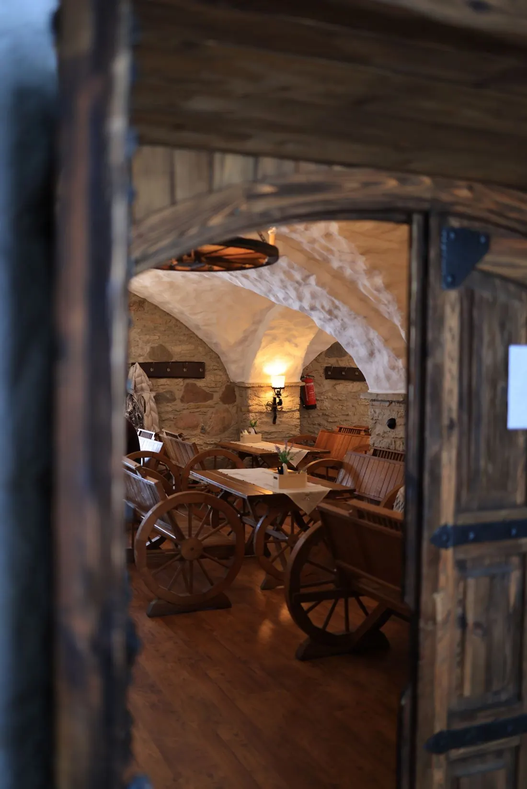
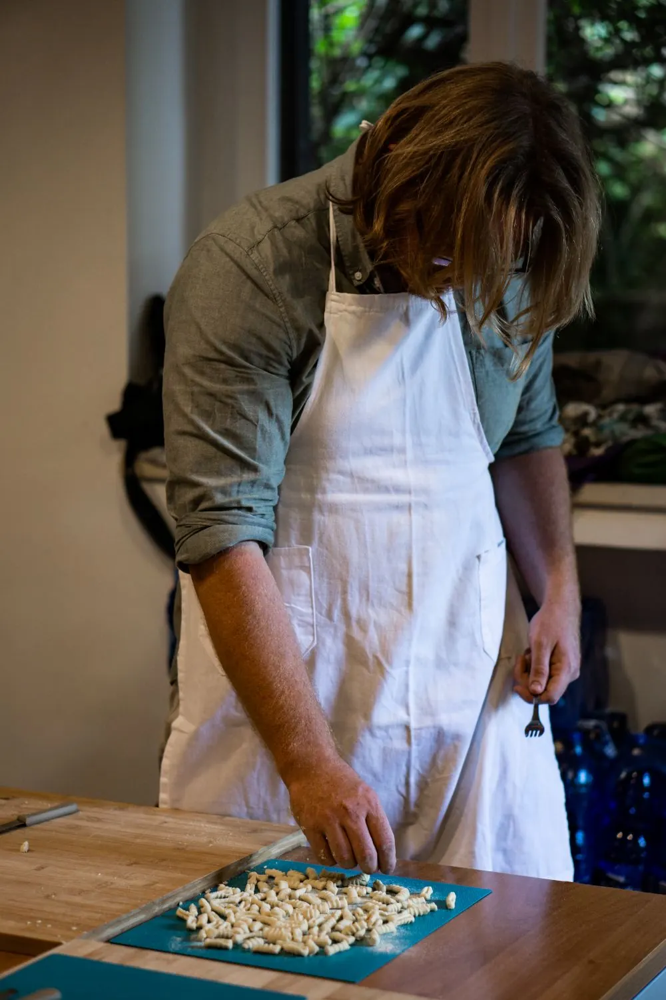
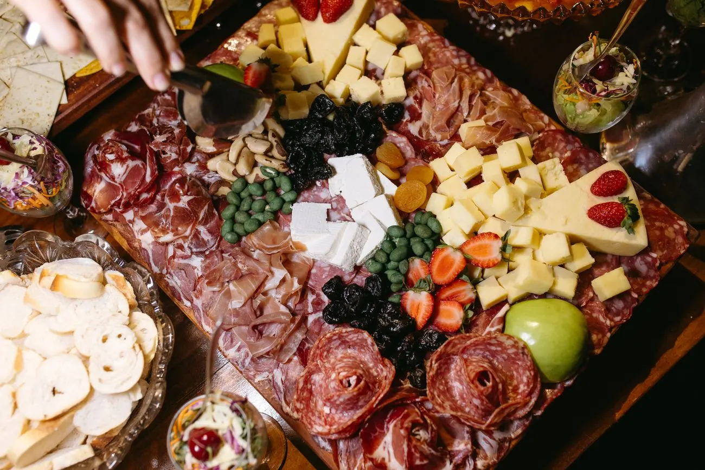
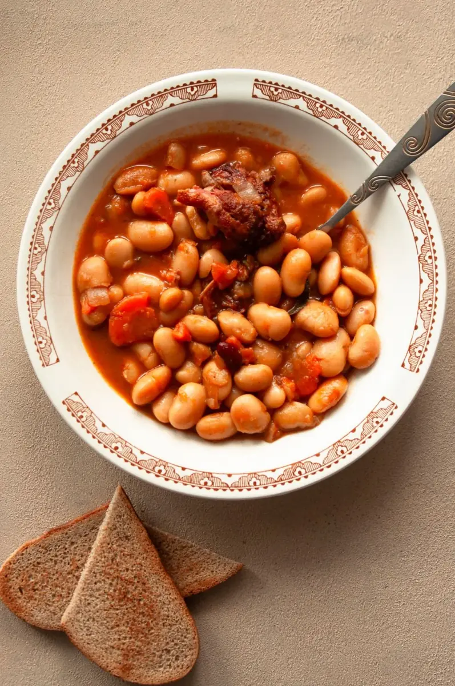
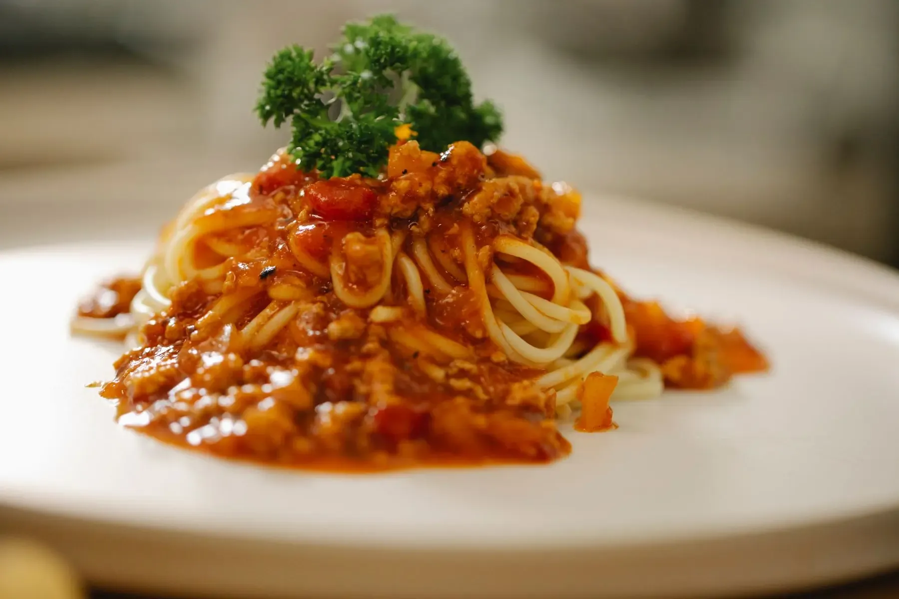
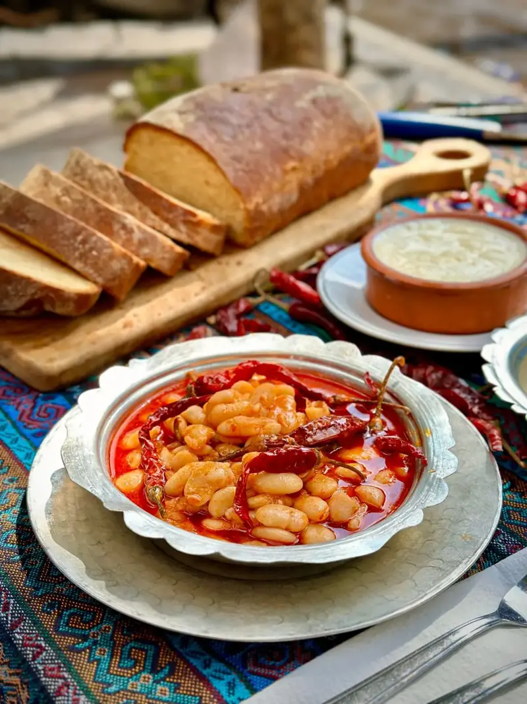
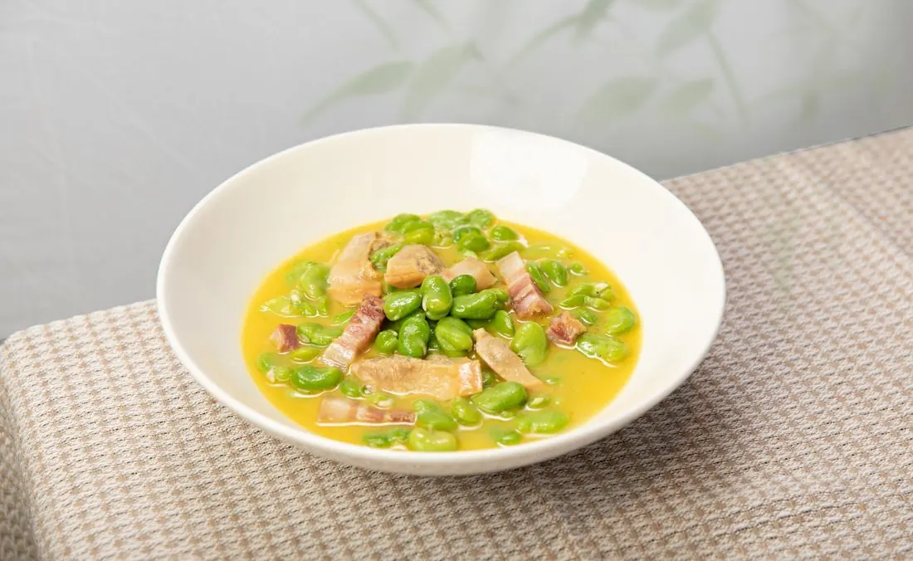
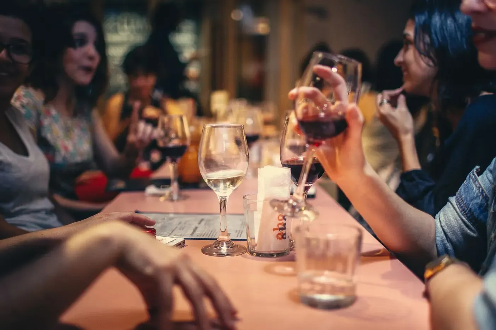

La vera cucina povera, quella del popolo.
Lardiata, pasta e ceci, baccalà, mugliatiello e zuppe di stagione. Una locanda di famiglia a due passi dal centro storico di Benevento, dove ogni piatto arriva in tavola con la sua storia.


povera
e vera
Una locanda
come una volta.
Pochi tavoli, arredi d'altri tempi e il profumo della cucina di casa. La Locanda Scialapopolo è una trattoria di famiglia: Alfonso in sala, Antonella e la figlia ai fornelli, tutti insieme a portare in tavola la cucina sannita di sempre.
Il menu cambia con le stagioni e lo racconta Alfonso, piatto per piatto: da dove viene la ricetta, perché si mangia in quel periodo, cosa c'entra con la storia di Benevento. Chi viene una volta, di solito, torna.

Scialare:
mangiare in abbondanza.
Per cominciare ci sono due antipasti della casa, tanto ricchi che una porzione basta per due. Ci trovi i salumi e i formaggi del territorio, le verdure di stagione e i piatti del giorno della cucina.
Antipasto Scialapopolo
Quello che porta il nome della locandaAntipasto Antica
I sapori della tradizione beneventanaOgni stagione, la sua cucina.
Primavera
Fave, piselli, erbe di campo e le prime verdure dell'orto.
Estate
Ciambotta, alici, pomodori e piatti più leggeri.
Autunno
Legumi, funghi, castagne e la mela annurca.
Inverno
Zuppe, cardone, carni brasate e la lardiata.





Il numero 1
di Benevento.
Alfonso racconta
Il padrone di casa spiega ogni piatto e la storia di Benevento: per molti è la parte più bella della serata.
Sannio autentico
Cucina tipica e casereccia, prodotti locali e ricette che oggi si trovano di rado.
Porzioni generose
Si mangia tanto e bene, con un rapporto qualità-prezzo che gli ospiti lodano spesso.
Come stare a casa
Pochi tavoli e un'accoglienza familiare. Proprio per questo conviene prenotare.
Sintesi delle recensioni pubbliche (novembre 2026). Le recensioni complete si possono mostrare con il widget ufficiale di Google o Tripadvisor.
Pranzo e cena,
tranne il martedì.
Orari da confermare con la locanda. I tavoli sono pochi: meglio prenotare, soprattutto nel fine settimana.
Dove siamo
Via Francesco Paga 69, 82100 Benevento (BN)
A pochi passi dal centro storico.
Telefono: 331 792 0783
Accesso per persone con disabilità.
Prenota il tuo tavolo.
Compila la richiesta: si apre WhatsApp con il messaggio già scritto. La locanda ti risponde per confermare il tavolo.
Preferisci chiamare? 331 792 0783